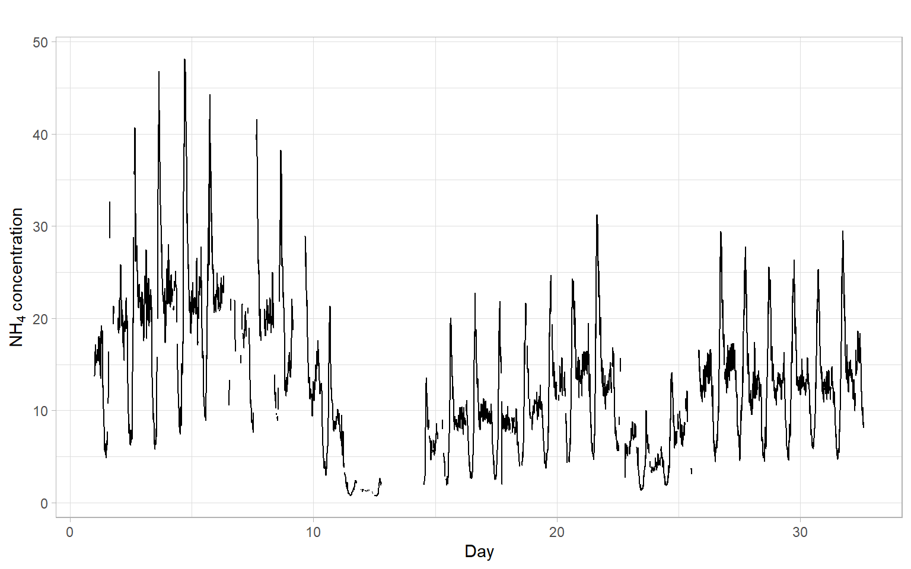
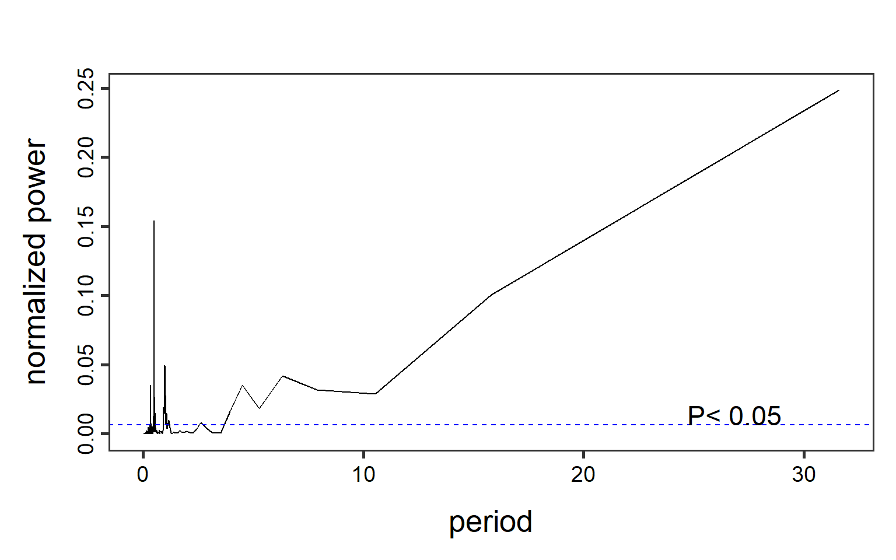
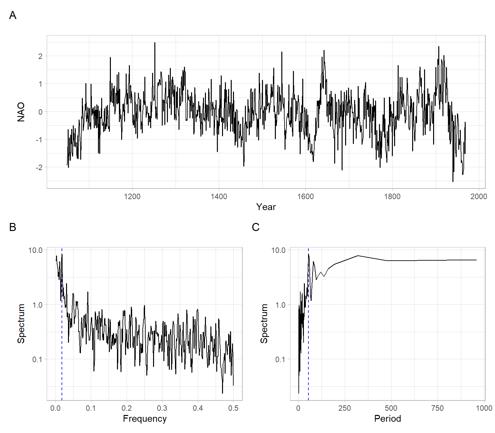

10 Spectral Analysis
The goal of this lecture is to learn how to view time series from the frequency perspective. You should be able to recognize features of time series from a periodogram similar to how we did it using plots of the autocorrelation function (ACF).
Objectives
- Describe the mechanics of Fourier transform for time series.
- Present results of spectrum calculations using a periodogram or spectrogram.
- Give examples of smoothed periodograms.
- Demonstrate the use of the Lomb–Scargle periodogram for analysis of unequally-spaced time series.
Reading materials
10.1 Introduction
By now, we have been working in the time domain, such that our analysis could be seen as a regression of the present on the past (for example, ARIMA models). We have been using many time series plots with time on the \(x\)-axis.
An alternative approach is to analyze time series in a spectral domain, such that use a regression of present on a linear combination of sine and cosine functions. In this type of analysis, we often use periodogram plots, with frequency or period on the \(x\)-axis.
10.2 Regression on sinusoidal components
The simplest form of spectral analysis consists of regression on a periodic component: \[ Y_t = A\cos \omega t + B \sin \omega t + C + \epsilon_t, \tag{10.1}\] where \(t =1,\dots,T\) and \(\epsilon_t \sim \mathrm{WN}(0, \sigma^2)\). Without loss of generality, we assume \(0 \leqslant \omega \leqslant \pi\). In fact, for discrete data, frequencies outside this range are aliased into this range. For example, suppose that \(-\pi < (\omega = \pi - \delta) < 0\), then \[ \begin{split} \cos(\omega t) &= \cos((\pi - \delta)t) \\ & = \cos(\pi t) \cos(\delta t) + \sin(\pi t) \sin(\delta t) \\ & = \cos(\delta t). \end{split} \] Hence, a sampled sinusoid with a frequency smaller than 0 appears to coincide with a sinusoid with frequency in the interval \([0, \pi]\).
The term \(A\cos \omega t + B \sin \omega t\) is a periodic function with the period \(2\pi / \omega\). The period \(2\pi / \omega\) represents the number of time units that it takes for the function to take the same value again, i.e., to complete a cycle. The frequency, measured in cycles per time unit, is given by the inverse \(\omega / (2 \pi)\). The angular frequency, measured in radians per time unit, is given by \(\omega\). Because of its convenience, the angular frequency \(\omega\) will be used to describe the periodicity of the function, and its name is shortened to frequency when there is no danger of confusion.
Consider monthly data that exhibit a 12-month seasonality. Hence, the period \(2\pi / \omega = 12\), which implies the angular frequency \(\omega = \pi / 6\). The frequency, measured in cycles per time unit, is given by the inverse \[ \frac{\omega}{2\pi} = \frac{1}{12} \approx 0.08. \]
The formulas to estimate parameters of regression in Equation 10.1 take a much simpler form if \(\omega\) is one of the Fourier frequencies, defined by \[ \omega_j=\frac{2\pi j}{T}, \quad j=0,\dots, \frac{T}{2}, \] then \[ \begin{split} \hat{A}&=\frac{2}{T}\sum_t Y_t\cos \omega_jt,\\ \hat{B}&=\frac{2}{T}\sum_t Y_t\sin \omega_jt,\\ \hat{C}&=\overline{Y}=\frac{1}{T}\sum_tY_t. \end{split} \]
A suitable way of testing the significance of the sinusoidal component with frequency \(\omega_j\) is using its contribution to the sum of squares \[ R_T(\omega_j)=\frac{T}{2}\left( \hat{A}^2+\hat{B}^2 \right). \] If the \(\epsilon_t \sim N(0, \sigma^2)\), then it follows that \(\hat{A}\) and \(\hat{B}\) are also independent normal, each with the variance \(2\sigma^2/T\), so under the null hypothesis of \(A = B = 0\) we find that \[\frac{R_T(\omega_j)}{\sigma^2}\sim \chi_2^2\] or equivalently that \(R_T(\omega_j)/(2\sigma^2)\) has an exponential distribution with mean 1. The above theory can be extended to the simultaneous estimation of several periodic components.
10.3 Periodogram
The Fourier transform uses Fourier series, such as the pairs of sines and cosines with different periods, to describe the frequencies present in the original time series.
The Fourier transform applied to an equally-spaced time series \(Y_t\) (where \(t = 1,\dots,T\)) is also called the discrete Fourier transform (DFT) because the time is discrete (not the values \(Y_t\)).
To reduce the computational complexity of DFT and speed up the computations, one of the fast Fourier transform (FFT) algorithms is typically used.
The results of the Fourier transform are shown in a periodogram that describes the spectral properties of the signal.
The periodogram is defined as \[ I_T(\omega) = \frac{1}{2\pi T}\left| \sum_{t=1}^T Y_te^{i\omega t} \right|^2, \] which is an approximately unbiased estimator of the spectral density \(f\).
Some undesirable features of the periodogram:
- \(I_T(\omega)\) for fixed \(\omega\) is not a consistent estimate of \(f(\omega)\), since \[ I_T(\omega_j) \sim \frac{f(\omega_j)}{2} \chi^2_2. \] Therefore, the variance of \(f^2(\omega)\) does not tend to 0 as \(T \rightarrow \infty\).
- The independence of periodogram ordinates at different Fourier frequencies suggests that the sample periodogram plotted as a function of \(\omega\) will be extremely irregular.
Suppose that \(\gamma(h)\) is the autocovariance function of a stationary process and that \(f(\omega)\) is the spectral density for the same process (\(h\) is the time lag and \(\omega\) is the frequency). The autocovariance \(\gamma(h)\) and the spectral density \(f(\omega)\) are related: \[ \gamma(h) = \int_{-1/2}^{1/2} e^{2\pi i \omega h} f(\omega) d \omega, \] and \[ f(\omega) = \sum_{h=-\infty}^{+\infty} \gamma(h) e^{-2\pi i \omega h}. \]
In the language of advanced calculus, the autocovariance and spectral density are Fourier transform pairs. These Fourier transform equations show that there is a direct link between the time domain representation and the frequency domain representation of a time series.
10.4 Smoothing
The idea behind smoothing is to take weighted averages over neighboring frequencies to reduce the variability associated with individual periodogram values. However, such an operation necessarily introduces some bias into the estimation procedure. Theoretical studies focus on the amount of smoothing that is required to obtain an optimum trade-off between bias and variance. In practice, this usually means that the choice of a kernel and amount of smoothing is somewhat subjective.
The main form of a smoothed estimator is given by \[ \hat{f}(\lambda) = \int^{\pi}_{-\pi}\frac{1}{h}K\left( \frac{\omega-\lambda}{h}\right)I_T(\omega)d\omega, \] where \(I_T(\cdot)\) is the periodogram based on \(T\) observations, \(K(\cdot)\) is a kernel function, and \(h\) is the bandwidth. We usually take \(K(\cdot)\) to be a nonnegative function, symmetric about 0 and integrating to 1. Thus, any symmetric density, such as the normal density, will work. In practice, however, it is more usual to take a kernel of finite range, such as the Epanechnikov kernel \[ K(x)=\frac{3}{4\sqrt{5}}\left(1-\frac{x^2}{5} \right), \quad -\sqrt{5}\leqslant x \leqslant \sqrt{5}, \] which is 0 outside the interval \([-\sqrt{5}, \sqrt{5}]\). This choice of kernel function has some optimality properties. However, in practice, this optimality is less important than the choice of bandwidth \(h\), which effectively controls the range over which the periodogram is smoothed.
There are some additional difficulties with the performance of the sample periodogram in the presence of a sinusoidal variation whose frequency is not one of the Fourier frequencies. This effect is known as leakage. The reason of leakage is that we always consider a truncated periodogram. Truncation implicitly assumes that the time series is periodic with a period \(T\), which, of course, is not always true. So we artificially introduce non-existent periodicities into the estimated spectrum, i.e., cause ‘leakage’ of the spectrum. (If the time series is perfectly periodic over \(T\) then there is no leakage.) The leakage can be treated using an operation of tapering on the periodogram, i.e., by choosing appropriate periodogram windows.
When we work with periodograms, we lose all phase (relative location/time origin) information: the periodogram will be the same if all the data were circularly rotated to a new time origin, i.e., the observed data are treated as perfectly periodic.
Another popular choice to smooth a periodogram is the Daniell kernel (with parameter \(m\)). For a time series, it is a centered moving average of values between the times \(t - m\) and \(t + m\) (inclusive). For example, the smoothing formula for a Daniell kernel with \(m = 2\) is \[ \begin{split} \hat{x}_t &= \frac{x_{t-2}+x_{t-1}+x_t + x_{t+1}+x_{t+2}}{5} \\ &= 0.2x_{t-2} + 0.2x_{t-1} +0.2x_t + 0.2x_{t+1} +0.2x_{t+2}. \end{split} \]
The weighting coefficients for a Daniell kernel with \(m = 2\) can be checked using the function kernel(). In the output, the indices in coef[ ] refer to the time difference from the center of the average at the time \(t\).
kernel("daniell", m = 2)#> Daniell(2)
#> coef[-2] = 0.2
#> coef[-1] = 0.2
#> coef[ 0] = 0.2
#> coef[ 1] = 0.2
#> coef[ 2] = 0.2The modified Daniell kernel is such that the two endpoints in the averaging receive half the weight that the interior points do. For a modified Daniell kernel with \(m = 2\), the smoothing is \[ \begin{split} \hat{x}_t &= \frac{x_{t-2}+2x_{t-1}+2x_t + 2x_{t+1} + x_{t+2}}{8} \\ & = 0.125x_{t-2} +0.25x_{t-1}+0.25x_t+0.25x_{t+1}+0.125x_{t+2} \end{split} \]
List the weighting coefficients:
kernel("modified.daniell", m = 2)#> mDaniell(2)
#> coef[-2] = 0.125
#> coef[-1] = 0.250
#> coef[ 0] = 0.250
#> coef[ 1] = 0.250
#> coef[ 2] = 0.125Either the Daniell kernel or the modified Daniell kernel can be convoluted (repeated) so that the smoothing is applied again to the smoothed values. This produces a more extensive smoothing by averaging over a wider time interval. For instance, to repeat a Daniell kernel with \(m = 2\) on the smoothed values that resulted from a Daniell kernel with \(m = 2\), the formula would be \[ \hat{\hat{x}}_t = \frac{\hat{x}_{t-2}+\hat{x}_{t-1}+\hat{x}_t +\hat{x}_{t+1}+\hat{x}_{t+2}}{5}. \]
The weights for averaging the original data for convoluted Daniell kernels with \(m = 2\) in both smooths will be
#> Daniell(2,2)
#> coef[-4] = 0.04
#> coef[-3] = 0.08
#> coef[-2] = 0.12
#> coef[-1] = 0.16
#> coef[ 0] = 0.20
#> coef[ 1] = 0.16
#> coef[ 2] = 0.12
#> coef[ 3] = 0.08
#> coef[ 4] = 0.04#> mDaniell(2,2)
#> coef[-4] = 0.0156
#> coef[-3] = 0.0625
#> coef[-2] = 0.1250
#> coef[-1] = 0.1875
#> coef[ 0] = 0.2188
#> coef[ 1] = 0.1875
#> coef[ 2] = 0.1250
#> coef[ 3] = 0.0625
#> coef[ 4] = 0.0156The center values are weighted slightly more heavily in the modified Daniell kernel than in the unmodified one.
When we smooth a periodogram, we are smoothing across frequencies rather than across times.
10.5 Periodogram for unequally-spaced time series
Unequally/unevenly-spaced time series or gaps in observations (missing data) can be handled with the Lomb–Scargle periodogram calculation. This method was originally developed for the analysis of unevenly-spaced astronomical signals (Lomb 1976; Scargle 1982) but found application in many other domains, including environmental science (e.g., Ruf 1999; Campos et al. 2008; Siskey et al. 2016).
For example, consider a time series imputeTS::tsNH4 of ammonium (NH\(_4\)) concentration in a wastewater system (Figure 10.4). This time series contains observations from regular 10-minute intervals, but some of the observations are missing.
Code

Save the data in a format acceptable by the Lomb–Scargle function.
If needed, na.omit(D) can be used to remove the rows with missing values.
Figure 10.5 and Figure 10.6 show periodograms calculated based on these data. Note that the function lomb::lsp() has arguments adjusting the span of the frequencies and significance level.
Code

Code
lomb::lsp(D$NH4, times = D$Time, type = "period", alpha = 0.05, main = "")
10.6 Frequency estimation in time
The assumption of a whole time series having a constant spectrum might be very limiting for the analysis of long time series. An estimation of frequencies locally in time allows us to study how the spectrum changes in time, and also detect smaller (short-lived) signals that would be averaged out otherwise. A straightforward solution is to separate the time series into windows (sub-periods) and estimate a spectrum in each such window.
The windowed analysis makes sense when in each window we have enough observations to estimate the frequencies. As a guide, we should have at least two observations per period to be able to represent the signal in the discrete Fourier transform. For example, we cannot estimate the seasonality if we sample once per year – this is our sampling rate or sampling frequency \(F_s\). To start identifying seasonal periodicity, our sampling rate should be at least 2 samples per year. The highest frequency we can work with is limited by the Nyquist frequency \[ F_N = \frac{F_s}{2}, \] which is half of the sampling frequency.
After applying the FFT in each window, the results can be visualized in a spectrogram. The spectrogram combines information from multiple periodograms: it shows time on the \(x\)-axis, frequency on the \(y\)-axis, and the corresponding spectrum power as the color.
Consider a long time series of the North Atlantic Oscillation (NAO) index obtained from an ensemble of 100 model-constrained NAO reconstructions (Figure 10.7).
Code
NAOdf <- readr::read_csv("data/NAO.csv", skip = 12, show_col_types = FALSE) %>%
rename(NAOproxy = nao_mc_mean) %>%
select(Year, NAOproxy) %>%
arrange(Year)
NAO <- ts(NAOdf$NAOproxy, start = NAOdf$Year[1])
spec_raw <- spec.pgram(NAO, detrend = FALSE, plot = FALSE, spans = 3)
# Find the frequency with the max power
fmax <- spec_raw$freq[which.max(spec_raw$spec)]Code
p1 <- forecast::autoplot(NAO) +
xlab("Year") +
ylab("NAO") +
theme_light()
p2 <- data.frame(Spectrum = spec_raw$spec,
Frequency = spec_raw$freq) %>%
ggplot(aes(x = Frequency, y = Spectrum)) +
scale_y_continuous(trans = 'log10') +
geom_vline(xintercept = fmax, col = "blue", lty = 2) +
geom_line() +
ggtitle("") +
theme_light()
p3 <- data.frame(Spectrum = spec_raw$spec,
Period = 1/spec_raw$freq) %>%
ggplot(aes(x = Period, y = Spectrum)) +
scale_y_continuous(trans = 'log10') +
geom_vline(xintercept = 1/fmax, col = "blue", lty = 2) +
geom_line() +
ggtitle("") +
theme_light()
p1 / (p2 + p3) +
plot_annotation(tag_levels = 'A')
This is an annual time series, hence the sampling frequency \(F_s = 1\). From the global FFT results, the frequency with the maximal power is 0.019 year\(^{-1}\), which is equivalent to the period of about 53.3 years. We will set the window for the FFT and calculate the spectrogram. Note that we can use overlapping windows for a smoother picture.
# Set the window size (years), for applying the FFT in each window
window_size = 30
# Compute the spectrogram
SP <- signal::specgram(x = NAO,
n = window_size,
overlap = window_size/3,
Fs = 1)See the spectrograms in Figure 10.8 and compare them with the time series plot in Figure 10.7 A.
Code
par(mfrow = c(1, 2))
# Plot the spectrogram without decorations
print(SP, main = "A) Raw results")
# Discard phase information
P <- abs(SP$S)
# Normalize the spectrum to the range [0, 1]
P <- P - min(P)
P <- P/max(P)
# Extract time
Years <- time(NAO)[SP$t]
# Plot the spectrogram after processing
oce::imagep(x = Years,
y = SP$f,
z = t(P),
col = oce::oce.colorsViridis,
ylab = expression(Frequency~(y^-1 )),
xlab = "Year",
main = "B) After normalization and adding colors",
drawPalette = TRUE,
decimate = FALSE)
10.7 Conclusion
For challenging problems, smoothing, multitapering, linear filtering, (repeated) pre-whitening, and Lomb–Scargle can be used together. Beware that aperiodic but autoregressive processes produce peaks in spectral densities. Harmonic analysis is a complicated art rather than a straightforward procedure.
It is extremely difficult to derive the significance of a weak periodicity from harmonic analysis. Do not believe analytical estimates (e.g., exponential probability), as they rarely apply to real data. It is essential to make simulations, typically permuting or bootstrapping the data keeping the observing times fixed. Simulations of the final model with the observation times are also advised.
10.8 Appendix
Wavelet analysis
An alternative to the windowed FFT is the wavelet analysis, which also estimates the strength of time series variations for different frequencies and times. Wavelet is a ‘small wave’ or function \(\psi(t)\) approximating the variations. Popular wavelet functions are Meyer, Morlet, and Mexican hat.
Figure 10.9 shows the results of using the Morlet wavelet to process the NAO time series.